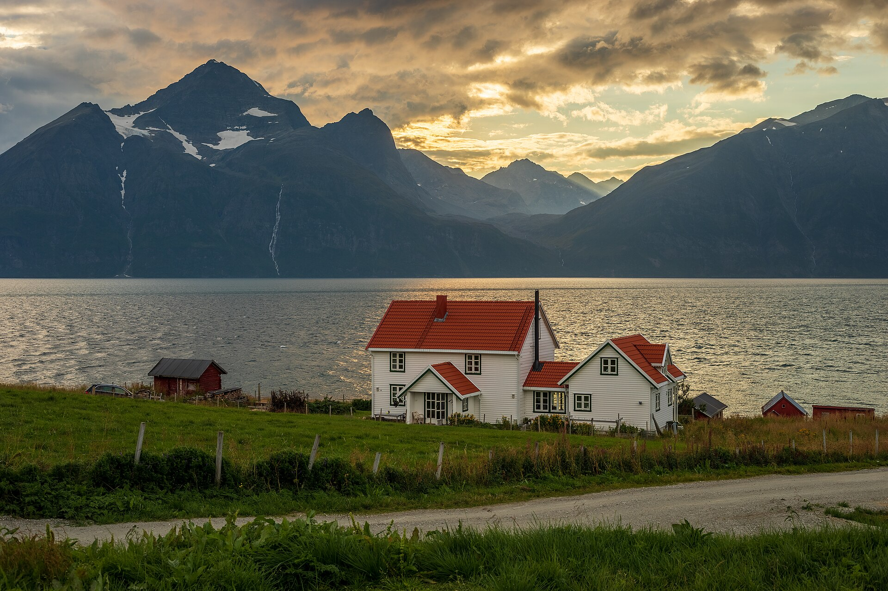

Skodde
Hour-by-hour forecasts for the valley you are in, not the nearest city.
Through the cloud at 900 metres

Below the cloud,a forecast for every farm.
The model
Our own weather model on a 500 metre grid, run every hour and checked against 1,900 stations in the hills.
- Grid500 m
- New runEvery hour
- CoverageNorway, Sweden, Finland
- APIFree for 10,000 calls a month